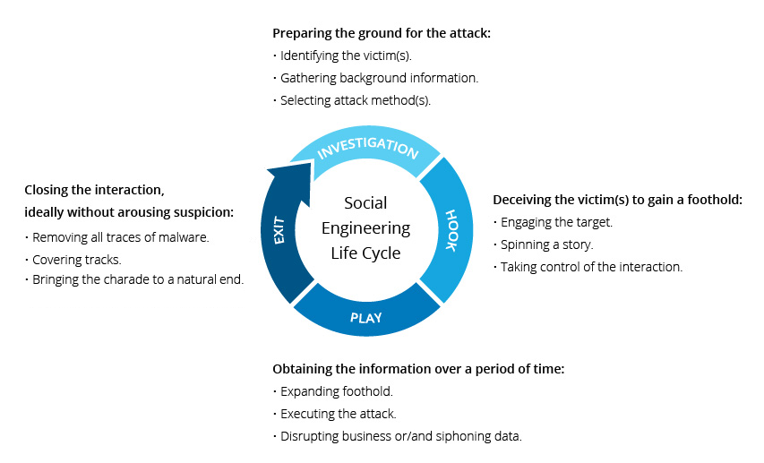
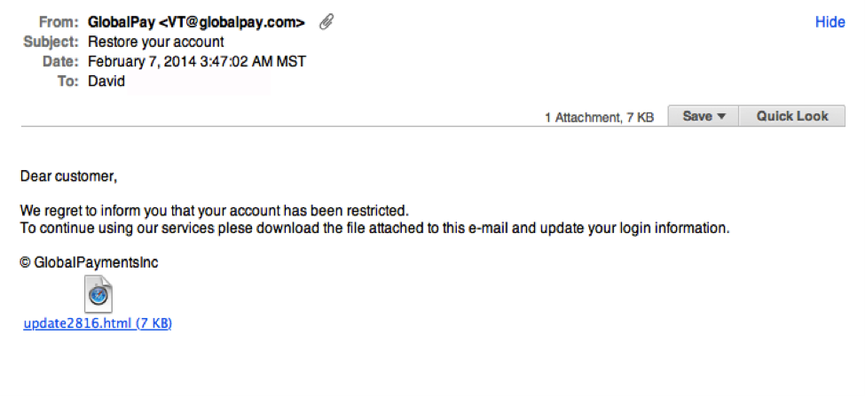
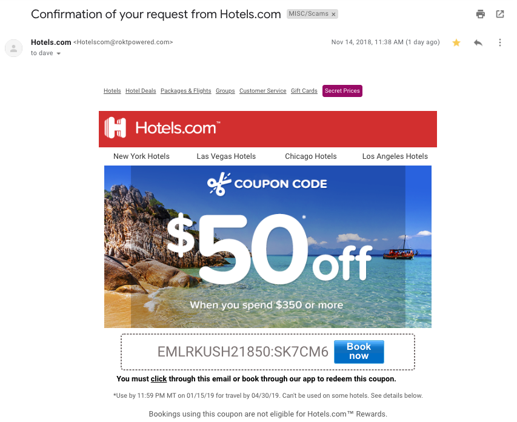
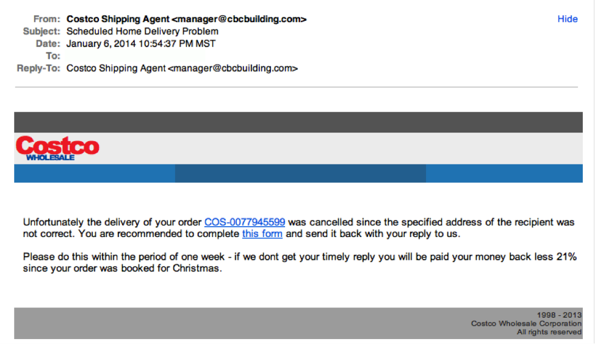
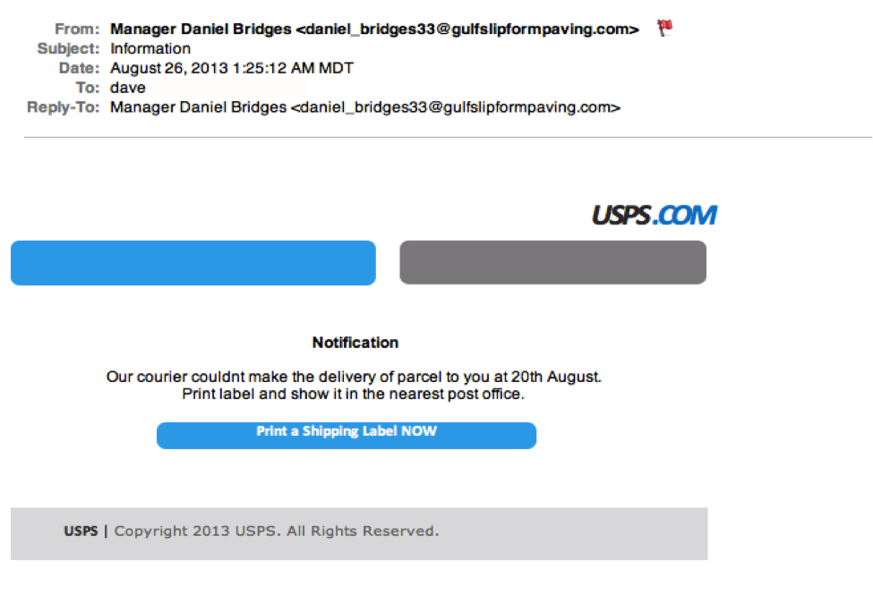

Որո՞նք են սոցիալական ինժիներության հարձակման ձևերը

-
Baiting (Խայծ)
Ինչպես անունն է ենթադրում, գրոհների ժամանակ կեղծ խոստումով արդնացնում են զոհի ագահության կամ հետաքրքրասիրությունը: Նրանք օգտվողներին գայթակղում են , գցում են թակարդի մեջ, որից հետո գողանում են նրանց անձնական տեղեկատվությունը կամ վնասում է նրանց համակարգերը չարամիտ ծրագրերով:
Օրինակ ՝
Հարձակվողները թողնում են խայծը, որը սովորաբար վարակված ֆլեշ կրիչ է, այն թողնում են նշանավոր վայրերում, որտեղ հավանական զոհերը (օրինակ ՝ լոգարաններ, վերելակներ և թիրախային ընկերության ավտոկանգառ) կտեսնեն դրանք: Խայծը ունի վավերական տեսք, ինչպիսին է պիտակը, այն ներկայացնում է որպես ընկերության աշխատավարձերի ցուցակ:
Զոհերը վերցնում են խայծը հետաքրքրասիրությունից և տեղադրում այն աշխատանքային կամ տնային համակարգչի մեջ, ինչը հանգեցնում է համակարգջի վարագմանե։ Կարդալ ավելին -
Scareware - (Խարդախություն)
Scareware- ը իր մեջ ներառում է կեղծ տագնապներով և սպառնալիքներ ստացած զոհերի: Օգտատերները սկսում են մտածել վոր իրենց համակարգիժը վարագված է։ Հարձակվողները Խրախուսելով օգտատերերին տեղադրել այնպիսի ծրագիր, որն իրական օգուտ չունի (բացի հարձակվողի համար) կամ ինքնին վնասակար ծրագիր է: Scareware- ը կոչվում է նաև խաբելու ծրագրաշար, կեղծարար ծրագրակազմ և խարդախություն:
Օրինակ ՝
Browser - ների մեժ դուրս եկող banner - ները վորոնց վրա գրած է թե «Ձեր համակարգիչը կարող է վարակվել չարամիտ լրտեսող ծրագրերից» Նա կա՛մ առաջարկում է ձեզ համար գործիք տեղադրել (որը հաճախ վարակված է վնասակար ծրագրերով), կա՛մ ուղղում է ձեզ վնասակար կայք, որտեղ ձեր համակարգիչը վարակվում է:
Scareware- ը տարածվում է նաև սպամի միջոցով, որը կեղծ ահազանգեր է տալիս կամ օգտվողներին առաջարկում է գնել անօգուտ / վնասակար ծառայություններ: Կարդալ ավելին -
Pretexting (պատրվակ)
Այստեղ հարձակվողը տեղեկատվություն է ստանում ստերի միջոցով: Խարդախությունը հաճախ հարուցվում է հանցագործի կողմից, որը ձևացնում է, որ նրան անհրաժեշտ է տուժողից գաղտնի տեղեկատվություն ՝ կրիտիկական առաջադրանքն ավարտելու համար:
Հարձակվողը վստահություն է հաստատել իր զոհի հետ ՝ իրեն ներկայացնելով որպես գործընկերներ, ոստիկան, բանկաին կամ հարկային մարմիններ կամ տեղեկատվությունը իմանալու իրավունք ունեցող այլ անձինք։
Հարցեր է տալիս, որոնք իփրանհրաժեշտ են զոհի ինքնությունը հաստատելու համար, որի օգնությամբ նրանք հավաքում են կարևոր անձնական տվյալներ:
Բոլոր տեսակի համապատասխան տեղեկությունները և գրառումները հավաքվում են Scareware-ի միջոցով, ինչպիսիք են սոցիալական ապահովության համարները, անձնական հասցեները և հեռախոսահամարները, հեռախոսային գրառումները, աշխատակազմի արձակուրդի ամսաթվերը, բանկային գրառումները և նույնիսկ ֆիզիկական ձեռնարկության հետ կապված անվտանգության վերաբերյալ տեղեկատվությունը: Կարդալ ավելին -
Phishing
Որպես Social engineering հարձակման ամենատարածված տեսակներից մեկը ՝ phishing-ի խաբեությունները էլեկտրոնային և տեքստային հաղորդագրությունների ուղարկումն է, որոնք ուղղված են տուժածների հրատապության, հետաքրքրասիրության կամ վախի ստեղծմանը:
Այնուհետև դրանք առաջացնում են բացահայտելու կրիտիկական տեղեկատվությունը, կտտացնելով վնասակար կայքերի հղումները կամ բացելով հավելվածներ, որոնք պարունակում են չարամիտ ծրագրեր:Օրինակ ՝
Առցանց ծառայության օգտագործողներին ուղարկված էլ-նամակը, որը նրանց նախազգուշացնում է քաղաքականության խախտման մասին, որը պահանջում է անհապաղ գործողություններ կատարել իրենց կողմից, ինչպես, օրինակ, գաղտնաբառի անհրաժեշտ վերականգնում:
Այն պարունակում է հղում դեպի անօրինական կայք ՝ գրեթե նույնական իր օրինական տարբերակի հետ. Հուշում է, որ կասկածյալ օգտագործողը մուտքագրի իրենց ընթացիկ հավատարմագրերը և նոր գաղտնաբառ: Ձևաթուղթը ներկայացնելուց հետո տեղեկատվությունն ուղարկվում է հարձակվողին: Կարդալ ավելին
Սոցիալական ինժեներության կանխարգելումը
-
Օգտագործեք լավ ծրագրային ապահովում
Երբ լավ հասկանում եք, թե որոնք են ֆիշինգի գրոհները և ինչպես կարող են ձեզ համար խնդիր առաջացնել, դուք պետք է անեք հետևյալը ՝ ընտրեք ճիշտ գործիքներ ՝ ձեր համակարգը պաշտպանելու ձեր համակարգը ֆիշինգի հարձակումներից:
Մի բացեք նամակներ և հավելվածներ կասկածելի աղբյուրներից
Եթե հարցն ուղարկողին չեք ճանաչում, ապա պետք չէ էլ. Փոստով պատասխանել: Նույնիսկ եթե դուք գիտեք նրանց և կասկածում եք նրանց հաղորդագրության վերաբերյալ, ստուգեք և հաստատեք այլ աղբյուրներից ստացվող լուրերը, ինչպիսիք են հեռախոսով կամ անմիջապես ծառայություններ մատուցողի կայքից: Հիշեք, որ էլփոստի հասցեները միշտ փչացած են. անգամ վստահելի աղբյուրից ստացված էլփոստը կարող է իրականում նախաձեռնել է հարձակվողի կողմից:-
Օգտագործեք բազմաֆունկցիոնալ authentication
Կիբեր հանցագործները որոնող ամենաարժեքավոր մասերից մեկը օգտագործողների auth douments: Բազմակի վավերացումից օգտվելն օգնում է պաշտպանել ձեր հաշիվը համակարգային հաքի դեպքում: Imperva Login Protect- ը 2FA- ի դյուրին լուծում է, որը կարող է մեծացնել հաշվի անվտանգությունը ձեր դիմումների համար: Զգուշացեք գայթակղիչ առաջարկներից
Եթե մի նախադասություն չափազանց գայթակղիչ է թվում, երկու անգամ մտածեք նախքան այն որպես փաստ ընդունելը: Թեմաների որոնումը կօգնի ձեզ արագ որոշել, թե գործ ունեք օրինական առաջարկի կամ ծուղակի հետ:Պահեք ձեր հակավիրուսային / հակավիրուսային ծրագիրը update արած:
Համոզվեք, որ ավտոմատ թարմացումները միացված են: Պարբերաբար ստուգեք, որ կիրառվեն թարմացումները և ստուգեք ձեր համակարգը հնարավոր վարակների դեպքում: Digital Guardian- ի գրառման մեջ հարցում է կատարել ՏՏ ոլորտի շուրջ երեք տասնյակ մասնագետների և պարզել, որ սոցիալական ինժեներական գրոհներին դիմագրավելու լավագույն միջոցը բազմակողմանի մոտեցմամբ է: Սա ներառում է.Օգտվողներին սովորեցնել ճանաչել սոցիալական ինժեներական գրոհները ՝ տեղեկացնելով, թե երբ են խաբվում:
Այն նաև օգնում է ապահովել ձեր աշխատակիցների անվտանգությունն առաջին հերթին: Մարդիկ ձեր կազմակերպության ամենաթույլ օղակն են, այնպես որ համոզվեք, որ նրանք կստանան հուսալի գիտելիք: Պետք է կրկնել training - ները`վերջին նոր սպառնալիքներն ու սոցիալական ինժեներիայի նոր ձևերի դեմ պաիքարելը թարմացնելու համար:Հետևեք ձեր անձնական հաշիվներին
համոզվելու համար, որ կասկածելի գործողություններ չկան: Ստուգեք ձեր mail -ը՝ տեսնելու համար կան արդյոք էլեկտրոնային նամակներ, որոնք դուք չեք ուղարկել: Աշխատակիցներից մեկը պարզել է, որ ինքը վարկաբեկված է, երբ ստուգել է իր ֆեյսբուքյան պատմությունը: Հին երաշխիքները պետք է լինեն: Տեղադրեք վերջին հակավիրուսային, firewall և այլ ծրագրաշարերը:
Ինչ է Ֆիշինգը: [Սահմանում]
Ֆիշինգը անհատական տեղեկատվություն հավաքելու փորձ կատարելու մեթոդ է ՝ օգտագործելով խաբուսիկ էլեկտրոնային նամակներ և կայքեր: Ֆիշինգը - առցանց խարդախությունների մի տեսակ, որի նպատակը զոհի գաղտնի տվյալները՝ login և password-ը գողանալն է:
Ֆիշինգը social engineering-ի այն տեսակներից մեկն է, որը հիմնվում է օգտագործողների ցանցի անվտանգության հիմունքները չիմանալուն. Դա ձեռք է բերվում հանրաճանաչ ապրանքանիշերի անունից էլեկտրոնային հասցեների զանգվածային փոստեր ուղարկելու միջոցով, ինչպես նաև տարբեր ծառայությունների շրջանակներում մասնավոր հաղորդագրություններ, օրինակ, բանկերի անունից կամ սոցիալական ցանցերում:
Ֆիշինգի պատմությունը
Ֆիշինգ տերմինի ծագումը բավականին հեշտ է հետագծել: Ֆիշինգ հարձակումը շատ առումներով նման է սովորական ձկնորսության: Սկզբում պետք է ձեռք բերել խայծ, որը կարող է մոլորության մեջ գցել զոհին, այնուհետև գցել ձկնորսական թելը և սպասել, որ «ձկները» սկսեն բռնել:
1970-ականներին ձևավորվեց ենթամշակույթ, որի ներկայացուցիչները հեռախոսային ցանցերը կոտրելու համար օգտագործեցին մի շարք ցածր տեխնոլոգիական մեթոդներ: Այս վաղ հակերները կոչվում էին «phreaks» (ֆրեյքերներ), ինչը «phone» (հեռախոս) և «freak» (խարդախություն) բառերի համադրություն է: Այդ ժամանակ ցանցին միացված համակարգիչների քանակը փոքր էր, ուստի փախստականների նպատակը անվճար միջազգային զանգեր կամ զանգեր կատարելն էր այն հեռախոսահամարներում, որոնք ներառված չէին:
«Ֆիշինգը, կիբեր հարձակման ամենապարզ մեթոդն է, որը, սակայն, ամենավտանգավորներից և արդյունավետներից մեկն է»
Ինջպես է կատարվում ֆիշինգ հարձակումը։
Ինջպես չդառնալ Ֆիշինգաին հարձակման զոհ
-
Օգտագործեք լավ ծրագրային ապահովում
Երբ լավ հասկանում եք, թե որոնք են ֆիշինգի գրոհները և ինչպես կարող են ձեզ համար խնդիր առաջացնել, դուք պետք է անեք հետևյալը ՝ ընտրեք ճիշտ գործիքներ ՝ ձեր համակարգը պաշտպանելու ձեր համակարգը ֆիշինգի հարձակումներից:
avast
Avira Premium Security Suite
Earthlink ScamBlocker (discontinued
eBay Toolbar
ESET Smart Security
Google Safe Browsing (used in Mozilla Firefox, Google Chrome , Opera , Safari , and Vivaldi
-
Օրինական ընկերությունները չեն պահանջում ձեր գաղտնի տեղեկատվությունը էլ.փոստով
Ամենայն հավանականությամբ, եթե դուք ստանում եք անցանկալի էլ-նամակ այն հաստատությունից, որն ունի հղում կամ հավելված և պարունակում է ձեզ գաղտնի տեղեկատվություն տրամադրել, ապա սա խաբեություն է: Ընկերությունների մեծ մասը ձեզ էլ-նամակ չի ուղարկի `խնդրելով նրանց մուտքագրել գաղտնաբառերը, վարկային քարտի տվյալները, վարկային միավորները կամ հարկային համարները, և նրանք ձեզ հղում չեն ուղարկելու համակարգ մուտք գործելու համար:
 -
Օրինական ընկերությունները սովորաբար ձեզ դիմում են անունով
Ֆիշինգական էլեկտրոնային հասցեները սովորաբար օգտագործում են ընդհանուր շնորհավորանքներ, ինչպիսիք են «Հարգելի մասնակից», «Հարգելի հաշիվներ կրող» կամ «Հարգելի հաճախորդ» : Եթե այն ընկերությունը, որի հետ աշխատում եք, խնդրում է տեղեկատվություն ստանալ ձեր հաշվի մասին, նրանք ձեզ կզանգահարեն էլեկտրոնային փոստով և, հավանաբար, կխնդրեն ձեզ դիմել նրանց հեռախոսով:ԲԱՅՑ, որոշ հակերներ պարզապես խուսափում են ողջույնից: Սա հատկապես ճիշտ է գովազդի համար: Ստորև բերված ֆիշինգի էլփոստը հիանալի օրինակ է:
Սա շատ համոզիչ նամակ է: Բայց հուշումը էլեկտրոնային փոստի domain տիրույթում էր: Ավելին այս մասին ՝ ստորև:
-
Օրինական ընկերություններն ունեն domain նամակներ
Ստուգեք ձեր էլ. Փոստի հասցեն `թեքելով «from» հասցեն: Համոզվեք, որ ոչ մի փոփոխություն չի կատարվել (օրինակ ՝ լրացուցիչ համարներ կամ տառեր): Ստուգեք էլփոստի երկու հասցեների միջև եղած տարբերությունը ՝ որպես փոփոխված էլ.փոստի օրինակ ՝ michelle@paypal.com michelle@paypal23.com Պարզապես հիշեք, որ սա հուսալի մեթոդ չէ: Երբեմն ընկերությունները օգտագործում են եզակի կամ տարբեր տիրույթներ `էլեկտրոնային հասցե ուղարկելու համար, իսկ որոշ փոքր ընկերություններ օգտագործում են երրորդ կողմի էլփոստի մատակարարներ:
 -
Օրինական ընկերությունները թույլ չեն տալիս ուղղագրական սխալներ։
Թերևս կեղծ նամակներ ճանաչելու ամենադյուրին ճանապարհը վատ քերականության միջոցով է: Օրինական կազմակերպության նամակը պետք է լավ գրված լինի: Հայտնի փաստ, Հակերները, ընդհանուր առմամբ, հիմար չեն: Նրանք գերադասում են իրենց հարձակումը իրականացվի նաև անտեղյակների վրա ՝ համարելով նրանց ավելի քիչ դիտորդ և, հետևաբար, ավելի թեթև թիրախներ:
-
Օրինական ընկերությունները ձեզ չեն արաջարկում իրենց վեբ կայք
Երբեմն ֆիշինգի էլփոստերը ամբողջությամբ ծածկագրվում են որպես հիպերհղում: Հետևաբար, էլ.փոստով որևէ տեղ պատահականորեն կամ դիտավորությամբ կտտացնելով կբացվի կեղծ վեբ էջ կամ ներբեռնեք սպամը ձեր համակարգչում:

Ինչ է Spoofing-ը: [Սահմանում]
Spoofing-ը վերաբերում է կիբերհանցագործությունների ցանկացած տիպի, որը տեղի է ունենում այն ժամանակ, երբ հակերը ձևացնում է, որ հայտնի կոնտակտ կամ աղբյուր է: Մենք կարող ենք բնութագրել որպես խարդախություն ՝ ներառելով բազմաթիվ մարտավարություններ, որոնք կախված են մեկ ուրիշին ներկայացնելու հակերների ունակությունից:
Հաքերը ձեռք բերելով զոհի վստահությունը, վտանգն ակնհայտ է դառնում: Էլ.փոստի և հեռախոսի կեղծիքները շահարկում են իրենց զոհերին ՝ գաղտնի անձնական տեղեկություններ փոխանցելով, ինչը կարող է հանգեցնել ֆինանսական խարդախությունների կամ ինքնության գողության: Հակերները հաճախ օգտագործում են էլեկտրոնային փոստով խարդախություն ՝ զոհերին ծուղակ տալու համար: spoofing - ի այլ տեսակներ սովորաբար ուղղված են ցանցին, այլ ոչ թե անհատներին, որպեսզի չարամիտ ծրագրեր տարածեն, գողանան տվյալները, շրջանցեն անվտանգության համակարգերը կամ հիմք ստեղծեն հետագա հարձակումների համար: Քանի որ spoofing-ը կարող է օգտագործվել նման բազմազան եղանակներով, յուրաքանչյուր հարձակման նույնականացումը դժվար է: Այդ իսկ պատճառով շատ կարևոր է ինքներդ ձեզ ապահովել հուսալի և հուսալի ինտերնետային անվտանգություն (Kaspersky Total Security, Bitdefender Antivirus Plus):

Ո՞րն է տարբերությունը Spoofing-ի և ֆիշինգի միջև:
ֆիշին խարդախությունը ենթադրում է զոհերին «խայթել» խայծով, օրինակ ՝ կեղծ էլ.փոստեր և նրանց զգայուն անձնական տվյալների մղում, որոնք այնուհետև կարող են օգտագործվել անձնական տվյալներ գողանալու համար: 36 Ինչպես արդեն նշվեց, spoofing-ի մի քանի տարբեր տեսակ կա: DNS կամ IP հասցեի spoofing-ը բոլորովին տարբերվում է ֆիշինգից, քանի որ այն ներառում է համակարգչային կամ ցանց խաբելու տեխնիկական միջոցների օգտագործում: Էլ.փոստի spoofing-ը ու ֆիշինգը շատ նման են և հաճախ օգտագործվում են միասին: Հիշեցնենք, որ spoofing հարձակումների ժամանակ թվում է, որ հաքերների հաղորդագրությունները գալիս են հուսալի աղբյուրից: Քանի որ ֆիշինգի նպատակը զոհերին խաբելն է ՝ գաղտնի անձնական տեղեկությունները բացահայտելու համար, շատ ֆիշերներ spoofing են օգտագործում, խաբել ձեր զոհերին ՝ հավատալով, որ իրենց էլ.փոստը օրինական է: Որոշ ֆիշերներ իրենց կեղծ նամակներ են ուղարկում հնարավորինս շատ թիրախներ ՝ առանց դիմելու հուսալի աղբյուրի spoofing-ի լրացուցիչ ջանքերի: Արդյունքում, այս նամակների մեծ մասը գնում է հենց այնտեղ, որտեղ պետքե գտնվեն ՝ սպամի թղթապանակում: Խելացի հաքերները կօգտագործեն spoofing`իրենց ֆիշինգի էլ-փոստերն ավելի հավատալու համար, ուստի ավելի հավանական է հաջողության հասնել: Եկեք պարզենք, թե ինչպես է դա տեղի ունենում:
Spoofing-ի այլ օրինակներ:
-
ARP- ի spoofing.
Սա թույլ է տալիս հակերին ներթափանցել LAN, քողարկելով իր համակարգիչը որպես ցանցի անդամ: Հակերները օգտագործում են ARP- ի խարդախությունը `տեղեկատվություն գողանալու համար, օգտագործելով միջնադարյան գրոհները: Հաքերը գաղտնի կերպով ընդհատում է խոսակցությունը և ձևացնում, թե երկուսն էլ մասնակից են, դրանով իսկ հավաքելով քննարկված բոլոր տեղեկությունները:
-
DNS- ի spoofing.
Այս մեթոդը, որը նաև հայտնի է որպես DNS քեշի թունավորում, վերահղում է զոհերին մեկ կայքից մյուսը: Հաքերը «թունավորելու» է DNS սերվերի վրա թիրախային կայքի վերաբերյալ տվյալները ՝ փոխելով դրա հետ կապված IP հասցեն իրենց ընտրության մեկին, որն այնուհետև զոհերին կուղղի դեպի կեղծ վեբ կայքեր, որոնք հավաքում են անձնական տվյալներ կամ չարամիտ ծրագրեր են ներբեռնում իրենց համակարգիչների վրա:
-
Վեբ կայքի spoofing:
Երբ հակերը ստեղծում է իրական կայքի կեղծ նմանակ, նա spoof է անւմ կայքը: Այդ կայքերը նման են իրականին, և երբ օգտվողները մուտք են գործում, հակերը ստանում է զոհերի գաղտնի տվյալները:
-
Զանգահարողի ID- ի spoofing-ը:
Այս մեթոդը հանրաճանաչ է ռոբո բաժանորդների շրջանում, քանի որ նրանք կարող են ցուցադրել իրենց զանգերը այնպես, կարծես գալիս են վստահելի համարից կամ հատուկ աշխարհագրական տարածաշրջանից: Հենց որ զոհը պատասխանի զանգին, հարձակվողը կփորձի համոզել նրանց գաղտնի տեղեկություններ տարածելու մեջ: Զանգահարողի ID- ի spoofing-ը կարող է օգտագործվել նաև կեղծ տեքստային հաղորդագրություններ ուղարկելու համար:
Ինչ է Social enginnering-ը: [Սահմանում]
Սոցիալական ինժեներությունը տերմին է, որն օգտագործվում է մարդկային փոխազդեցությունների միջոցով իրականացվող չարամիտ գործունեության լայն շրջանակի համար:Այն օգտագործում է հոգեբանական մանիպուլյացիա ՝ օգտագործողներին խաբելու համար անվտանգության սխալներ թույլ տալու կամ զգայուն տեղեկություններ տալու համար: